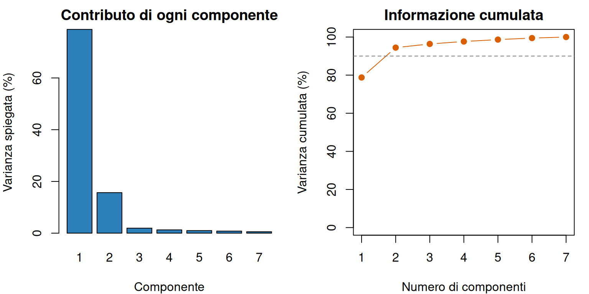

Un territorio non può essere descritto adeguatamente da un solo numero. Reddito, occupazione, istruzione, povertà, accesso ai servizi e struttura demografica misurano aspetti diversi, ma spesso collegati. Osservare una variabile alla volta può far perdere la struttura complessiva; sommarle senza criterio può invece produrre un indicatore privo di significato.
L’analisi multivariata studia simultaneamente più variabili osservate sulle stesse unità. In questo capitolo ci concentreremo sull’analisi in componenti principali (ACP, o PCA dall’inglese principal component analysis), uno strumento descrittivo per sintetizzare variabili quantitative correlate. Introdurremo inoltre l’analisi delle corrispondenze multiple per variabili qualitative.
Questi metodi aiutano a:
riconoscere gruppi di indicatori che si muovono insieme;
ridurre molte variabili a poche dimensioni sintetiche;
rappresentare unità e variabili in grafici più leggibili;
costruire indicatori sintetici trasparenti, discutendone i limiti.
L’ACP non distingue una variabile dipendente da variabili esplicative. Diversamente dalla regressione, non cerca di prevedere un esito specifico e non identifica relazioni causali. Cerca una rappresentazione compatta della variabilità presente nei dati.
8.1 Dalle variabili alla struttura multivariata
Supponiamo di osservare \(n\) territori e \(p\) indicatori quantitativi. I dati possono essere organizzati in una tabella con \(n\) righe e \(p\) colonne. Indichiamo con \(x_{ij}\) il valore dell’indicatore \(j\) nel territorio \(i\).
Prima di sintetizzare occorre chiarire:
che cosa rappresenta ogni riga e ogni colonna;
unità di misura, periodo e fonte degli indicatori;
direzione sostantiva di ciascuna variabile;
presenza di valori mancanti, errori o osservazioni influenti;
popolazione alla quale si vogliono estendere le conclusioni.
L’ACP richiede variabili quantitative. Inserire codici numerici arbitrari per categorie, come Nord = 1, Centro = 2 e Sud = 3, imporrebbe distanze che non hanno significato.
8.1.1 Un esempio territoriale simulato
Costruiamo dati per 40 territori fittizi. Gli indicatori sono reddito medio in migliaia di euro, tasso di occupazione, quota di laureati, copertura della banda larga, disoccupazione, povertà e quota di residenti anziani. I valori sono simulati, non provengono da fonti ufficiali e non descrivono territori reali.
Il codice usa due dimensioni non osservate per generare correlazioni: una legata allo sviluppo e una alla struttura demografica. Questa costruzione rende l’esempio interpretabile, ma l’ACP non conosce tali dimensioni e utilizza soltanto i sette indicatori osservati.
8.2 Correlazioni e ridondanza informativa
L’ACP è utile quando più indicatori contengono informazione in parte sovrapposta. Nel capitolo descrittivo abbiamo definito la correlazione come misura dell’associazione lineare tra due variabili. La matrice di correlazione raccoglie tutti i confronti a coppie.
Reddito, occupazione, laureati e banda larga hanno correlazioni positive elevate. Disoccupazione e povertà sono associate negativamente ai primi quattro indicatori e positivamente tra loro. La quota di anziani presenta invece legami più deboli con questo gruppo. Ci aspettiamo quindi una dimensione dominante legata alle condizioni socioeconomiche e una seconda dimensione più demografica.
AvvisoLa correlazione non rende intercambiabili gli indicatori
Due variabili fortemente correlate possono avere significati politici differenti. Reddito e occupazione non diventano lo stesso fenomeno solo perché si muovono insieme. La riduzione dimensionale sintetizza l’informazione statistica, non elimina la necessità di interpretare le singole misure.
8.3 Perché standardizzare
Gli indicatori hanno unità e dispersioni diverse. Senza correzioni, una variabile misurata su una scala numericamente ampia può dominare l’ACP anche se non è sostantivamente più importante.
Per ogni indicatore \(j\) standardizziamo il valore del territorio \(i\):
\[
z_{ij}=\frac{x_{ij}-\bar{x}_j}{s_j},
\]
dove \(\bar{x}_j\) è la media campionaria e \(s_j\) la deviazione standard dell’indicatore \(j\). Ogni variabile standardizzata ha media zero e deviazione standard uno. L’operazione è stata introdotta nel capitolo sulla statistica descrittiva.
Applicare l’ACP alle variabili standardizzate equivale a lavorare sulla matrice di correlazione. Se tutte le variabili sono espresse nella stessa unità e le differenze di varianza hanno un significato sostantivo, si può usare la matrice di covarianza. La scelta deve essere dichiarata.
AvvisoStandardizzare non risolve ogni problema
La standardizzazione non corregge valori errati, asimmetrie estreme o indicatori concettualmente inappropriati. Inoltre, assegna inizialmente a ogni variabile la stessa varianza: questa è già una scelta di ponderazione, non un’operazione neutrale.
8.4 L’intuizione dell’ACP
Immaginiamo una nuvola di punti descritta da molte coordinate. L’ACP cerca la direzione lungo la quale i punti sono più dispersi. Questa è la prima componente principale. Cerca poi una seconda direzione, perpendicolare alla prima, che conservi quanta più variabilità possibile tra quella rimasta. La procedura continua fino a ottenere al massimo \(p\) componenti.
La componente \(k\) per il territorio \(i\) è una combinazione lineare delle variabili standardizzate:
\(C_{ik}\) è il punteggio, o score, del territorio \(i\) sulla componente \(k\);
\(z_{ij}\) è il valore standardizzato dell’indicatore \(j\);
\(a_{jk}\) è il peso, spesso chiamato loading, dell’indicatore \(j\) sulla componente \(k\);
\(p\) è il numero di indicatori.
I pesi sono scelti in modo che la prima componente abbia la massima varianza possibile, con la condizione \(\sum_{j=1}^{p}a_{jk}^2=1\). Le componenti successive massimizzano la varianza residua e sono tra loro non correlate. L’ACP non sceglie i pesi per massimizzare una relazione causale o la previsione di un esito.
8.5 Calcolare l’ACP con R
La funzione prcomp() è inclusa in R. Impostiamo center = TRUE e scale. = TRUE per centrare e standardizzare gli indicatori. La funzione usa una decomposizione numericamente stabile e restituisce, tra gli altri elementi, deviazioni standard delle componenti, pesi e scores.
Il cambio di segno non modifica distanze, varianze o qualità della soluzione. In un’ACP il segno di ogni componente è arbitrario: moltiplicare contemporaneamente pesi e scores per -1 descrive lo stesso asse. Qui scegliamo che la prima componente aumenti con il reddito e la seconda con la quota di anziani, così le frasi interpretative rimangono stabili.
8.6 Quanta informazione conserva ogni componente
Indichiamo con \(\lambda_k\) la varianza della componente \(k\). La quota di varianza spiegata è
dove \(v_k\) è compreso tra 0 e 1. Moltiplicandolo per 100 otteniamo la percentuale di varianza spiegata. Con dati standardizzati, la varianza totale è pari al numero \(p\) di variabili.
In prcomp(), l’elemento sdev contiene le deviazioni standard delle componenti; elevandole al quadrato otteniamo le varianze \(\lambda_k\).
La prima componente spiega il 78,8% della variabilità complessiva e la seconda il 15,7%. Insieme conservano il 94,4% della varianza dei sette indicatori standardizzati. Le componenti successive aggiungono ciascuna una quota molto piccola in questi dati simulati.
par(mfrow =c(1, 2), mar =c(4, 4, 2, 1))barplot(100* quota_varianza,names.arg =seq_along(quota_varianza),col ="#2C7FB8",xlab ="Componente",ylab ="Varianza spiegata (%)",main ="Contributo di ogni componente")plot(seq_along(quota_varianza),100*cumsum(quota_varianza),type ="b",pch =19,col ="#D95F02",ylim =c(0, 100),xlab ="Numero di componenti",ylab ="Varianza cumulata (%)",main ="Informazione cumulata")abline(h =90, lty =2, col ="grey50")

Varianza spiegata e varianza cumulata dalle componenti principali.
par(mfrow =c(1, 1))
Il grafico di sinistra è chiamato spesso scree plot. Il gomito dopo la seconda componente suggerisce che due dimensioni offrano una sintesi efficace. La soglia del 90% nel grafico cumulato è soltanto un riferimento visivo: il numero di componenti va scelto considerando obiettivo, interpretabilità e stabilità, non applicando meccanicamente una percentuale.
8.7 Leggere i loadings
I loadings indicano come gli indicatori contribuiscono alla direzione di ciascuna componente. Valori grandi in valore assoluto segnalano un contributo importante; segni uguali indicano che le variabili entrano nella stessa direzione, segni opposti che entrano in direzioni opposte.
Nella prima componente, reddito, occupazione, laureati e banda larga hanno pesi positivi vicini a 0,4; disoccupazione e povertà hanno pesi negativi di ampiezza simile. La componente contrappone quindi condizioni economiche favorevoli e disagio socioeconomico. La quota di anziani pesa poco sulla prima componente.
La seconda componente è dominata dalla quota di anziani, con loading 0,948. Può essere letta come una dimensione demografica distinta. Le altre variabili vi contribuiscono molto meno.
Il nome di una componente non è prodotto dall’algoritmo. È un’interpretazione proposta dall’analista sulla base dei loadings e del significato degli indicatori. Chiamare la prima componente “sviluppo” non dimostra l’esistenza di un unico concetto oggettivo di sviluppo.
NotaPesi, loadings e correlazioni
In prcomp(), la matrice rotation contiene i coefficienti usati per costruire le componenti. Questi vengono spesso chiamati loadings. Non coincidono necessariamente con le correlazioni tra variabili e componenti; per variabili standardizzate, tali correlazioni dipendono anche dalla deviazione standard della componente.
8.8 Leggere gli scores
Gli scores collocano ogni territorio lungo gli assi sintetici. Uno score positivo sulla prima componente indica valori relativamente alti per gli indicatori con loading positivo e relativamente bassi per quelli con loading negativo. Lo zero rappresenta una posizione vicina al profilo medio standardizzato.
Scores dei territori simulati sulle prime due componenti principali.
T16 e T07 hanno scores elevati sulla prima componente e combinano valori relativamente favorevoli degli indicatori socioeconomici simulati. T11 e T40 si trovano all’estremo opposto. T32 e T04 hanno scores alti soprattutto sulla seconda componente, quindi si distinguono più per la struttura demografica che per la prima dimensione.
La vicinanza tra due punti indica profili simili rispetto alle componenti rappresentate, non identità su tutti gli indicatori. Inoltre, il grafico conserva il 94,4% e non il 100% della variabilità: una parte delle differenze resta fuori dal piano.
8.9 Costruire un indicatore sintetico
Lo score della prima componente può essere usato come indicatore sintetico se la componente ha un significato coerente con l’obiettivo. Per renderlo più leggibile, trasformiamo lo score in una scala con media 100 e deviazione standard 10:
\[
S_i=100+10\frac{C_{i1}}{s_C},
\]
dove \(C_{i1}\) è lo score del territorio \(i\) sulla prima componente e \(s_C\) è la deviazione standard campionaria degli scores della prima componente. Poiché gli scores hanno media zero, l’indice \(S_i\) ha media 100.
T11 e T40 hanno gli indici più bassi, rispettivamente 78,3 e 79,4; T07 e T16 i più alti, 117,8 e 123,3. Un valore di 120 non significa “20% di sviluppo in più”. Significa che il territorio si trova due deviazioni standard sopra la media dell’indicatore costruito in questo campione.
La graduatoria è descrittiva e dipende da variabili, periodo, standardizzazione e unità incluse. Aggiungere altri territori può cambiare medie, deviazioni standard, loadings, scores e posizioni. L’indice non misura incertezza campionaria e non dimostra che una politica abbia causato le differenze osservate.
AvvisoUn indicatore data-driven non è privo di valori
L’ACP sceglie i pesi per rappresentare la varianza, non l’importanza sociale. Indicatori molto variabili o ridondanti possono dominare la prima componente. La scelta di includere reddito, banda larga o povertà rimane una decisione teorica e politica che deve essere documentata.
8.10 Quante componenti conservare
Non esiste una regola unica. Sono utili almeno quattro criteri:
Varianza spiegata: le componenti conservate dovrebbero rappresentare una quota adeguata dell’informazione per l’obiettivo.
Scree plot: un gomito può indicare dove le componenti successive aggiungono poco.
Interpretabilità: una componente deve avere loadings leggibili e un significato sostantivo difendibile.
Stabilità: risultati che cambiano molto eliminando poche unità o aggiornando il periodo sono fragili.
Conservare una sola componente è attraente per creare una graduatoria, ma può cancellare dimensioni rilevanti. Nel nostro esempio la seconda componente separa la struttura demografica dalle condizioni socioeconomiche. Ridurla a rumore priverebbe l’analisi di un’informazione sostantiva.
8.11 Valori mancanti, outlier e qualità dei dati
prcomp() non accetta valori mancanti nella matrice utilizzata. Eliminare tutte le righe incomplete può cambiare la popolazione analizzata; sostituire i dati mancanti con la media riduce artificialmente la variabilità. La strategia deve dipendere dal meccanismo di mancanza e deve essere documentata.
L’ACP basata su medie, varianze e correlazioni è sensibile agli outlier. Un territorio estremo può modificare la direzione delle componenti e apparire poi molto distante proprio perché ha contribuito a definirle. È necessario esaminare distribuzioni e metadati prima dell’analisi, senza cancellare automaticamente casi sostantivamente importanti.
Variabili quasi duplicate possono inoltre ricevere peso complessivo elevato. Inserire tre misure molto simili del reddito e una sola misura dell’istruzione attribuisce implicitamente maggiore importanza alla dimensione economica. La selezione degli indicatori precede il calcolo.
8.12 Analisi delle corrispondenze multiple
L’ACP è adatta a variabili quantitative. Se vogliamo studiare congiuntamente variabili qualitative, come condizione occupazionale, titolo di studio, tipo di abitazione e accesso digitale, possiamo usare l’analisi delle corrispondenze multiple (ACM).
L’ACM trasforma ogni modalità in una colonna indicatrice: per esempio, la variabile condizione occupazionale genera colonne come occupato, disoccupato e inattivo. Ogni unità ha valore 1 nella modalità osservata e 0 nelle altre. A partire da questa matrice, il metodo costruisce assi che sintetizzano le associazioni tra profili di modalità.
I risultati principali sono:
le coordinate delle modalità, che indicano dove ciascuna categoria si colloca sugli assi;
gli scores delle unità, che riassumono il loro profilo di risposte;
l’inerzia, una misura della dispersione rappresentata da ciascun asse;
i contributi, che aiutano a riconoscere quali modalità definiscono maggiormente un asse.
Modalità vicine possono caratterizzare profili simili; modalità lontane dall’origine contribuiscono spesso a distinguere le unità. Questa lettura richiede cautela: la distanza va interpretata nel contesto del metodo e delle qualità di rappresentazione, non come correlazione ordinaria.
Le modalità rare possono apparire molto lontane e dominare un asse pur riguardando poche osservazioni. Prima dell’ACM occorre controllare frequenze, categorie quasi vuote e modalità definite in modo ambiguo. Loadings dell’ACP e coordinate o contributi dell’ACM non sono oggetti perfettamente equivalenti, anche se entrambi aiutano a interpretare le dimensioni.
Non aggiungiamo un esempio R perché il progetto non usa ancora un pacchetto per l’ACM e una sua introduzione responsabile richiederebbe anche diagnostica e grafici specifici. Il punto essenziale è scegliere il metodo in base al tipo di variabili, non convertire arbitrariamente categorie in numeri.
8.13 Errori interpretativi frequenti
Interpretare la prima componente come verità sostantiva. È la direzione di massima varianza, non necessariamente la dimensione politicamente più importante.
Dimenticare la standardizzazione. Con scale diverse, l’ACP sulla covarianza può essere dominata dalle unità di misura.
Leggere il segno come assoluto. Il segno di una componente può essere invertito senza cambiare la soluzione.
Confondere loadings e scores. I primi descrivono il ruolo delle variabili; i secondi collocano le unità.
Trattare la varianza spiegata come qualità causale. Una componente che spiega molta varianza non identifica cause o effetti.
Trasformare un indice in una graduatoria definitiva. Piccole differenze possono essere instabili e non misurano automaticamente differenze di benessere.
Ignorare indicatori esclusi e dati mancanti. La sintesi riguarda soltanto l’informazione effettivamente inserita nell’analisi.
8.14 Una procedura per l’analisi multivariata
Definire la domanda e le unità. Chiarire che cosa si vuole sintetizzare e su quale popolazione.
Selezionare indicatori motivati. Evitare duplicazioni e documentare direzione, fonte, periodo e unità.
Controllare i dati. Esaminare distribuzioni, valori mancanti, outlier e correlazioni.
Scegliere il metodo. Usare ACP per variabili quantitative e ACM per profili qualitativi; i dati misti richiedono metodi specifici.
Decidere la scala. Motivare l’uso di covarianze o correlazioni e ogni trasformazione preliminare.
Valutare le dimensioni. Combinare varianza spiegata, scree plot, interpretabilità e stabilità.
Leggere loadings e scores insieme. Assegnare nomi alle componenti soltanto dopo avere esaminato i contributi.
Comunicare i limiti. Affiancare all’indicatore sintetico le variabili originarie e dichiarare che la sintesi non implica causalità.
La riduzione dimensionale è utile quando rende visibile una struttura complessa senza nasconderne le scelte. Un buon indicatore sintetico non è soltanto facile da ordinare: deve essere riproducibile, interpretabile e accompagnato dalle sue componenti.